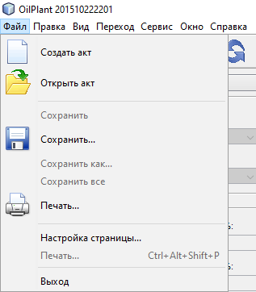
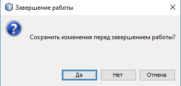
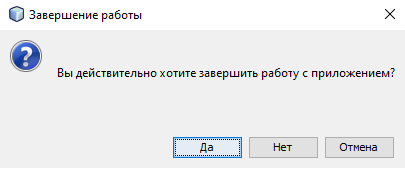

Описание меню "Файл"

Меню "Файл" предназначено для выполнения операций с актом.
Перечень операций, производимых с актом:
- Создать акт
- Открыть акт
- Закрыть акт
- Сохранить акт
- Печать акта
Команда меню "Выход" служит для выполнения операции выхода из приложения.
Если при попытке выхода из приложения был открыт акт, то приложение предложит сохранить акт перд выходом при помощи следующего окна подтверждения:

Если акт открыт не был или был сохранен, как описано абзацем выше, то приложение запросит подтверждение на выход из приложения:
